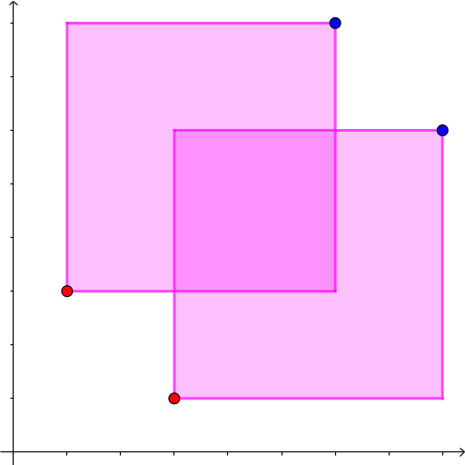

有 $n$ 个边平行于坐标轴的矩形，且这些矩形的边界两两没有公共点 (即只能嵌套或不交，且边界不重叠)。
现在给定这 $n$ 个矩形的左上角集合和右下角集合，你需要还原出这 $n$ 个矩形，即每个左上角与右下角的配对关系。或说明不存在一种矩形的放置方案满足条件。
第一行包含一个正整数 $n$ ($n \leq 10^5$)，表示矩形的数量。
接下来 $n$ 行，每行两个正整数 $r_i, c_i$ ($1 \leq r_i, c_i \leq 10^9$)，描述某个矩形的左上角坐标 (行号和列号，左上角为 $\left( 1, 1 \right)$)。
最后 $n$ 行，以相同的格式描述所有矩形的右下角集合。
保证所有 $2 n$ 个坐标互不相同。
输出 $n$ 行，每行一个整数。第 $i$ 行的整数 $j$ 表示中第 $i$ 个左上角与第 $j$ 个右下角构成一个矩形，其中左上角和右下角按照读入的顺序进行标号，从 $1$ 开始。可以证明如果有解则解唯一。如果不存在一种矩形的放置方案，输出 syntax error。
考虑如果我们知道了这些矩形的配对方案，则这些矩形就形成了一个嵌套结构 (nested relation)，可以使用扫描线 + 平衡树 (std::set) 来维护这些矩形的嵌套关系。
使用扫描线的具体过程可以参考 [JLOI2016]圆的异或并，只是把圆改成了(边平行于坐标轴的) 矩形，大同小异。
而现在只有矩形的一组对角了，我们仍然考虑使用扫描线来处理。
以下为了方便，我们考虑建立 $x$ 轴向右，$y$ 轴向上的坐标系，然后将矩形转化成左下角和右上角。
考虑从左往右的扫描线，则扫描线的事件共有两种：一种是在左下角的 "插入事件"，一种是在右上角的 "删除事件"。
对于一次 "插入事件"，设它的纵坐标为 $y_0$，即表示要插入一个下边界为 $y_0$ 的矩形。
此时我们只需判一下当前平衡树中是否有下边界为 $y_0$ 的矩形，如果有则说明无解。
对于一次 "删除事件"，设它的纵坐标为 $y_0$，则表示我们需要提取一个矩形，它的上边界为 $y_0$。
于是它的下边界一定 $\leq y_0$ (如果没有这样的元素则无解)，此时，设平衡树里所有不超过 $y_0$ 的下边界中，最大者为 $y_t$，则我们说明如果有解，则这个矩形的下边界一定是 $y_t$。
否则，设下边界为 $y_1 < y_t$，则线段 $\left( x, y_1 \right) - \left( x, y_0 \right)$ 被该矩形完全覆盖。
此时考虑下边界为 $y_t$ 的矩形，它的右边界 $x_r \geq x$，于是 $\left( x_l, y_t \right) - \left( x_r, y_t \right)$ 被该矩形完全覆盖。
从而点 $\left( x, y_t \right)$ 同时属于两个矩形，矛盾。
从而可以通过平衡树/std::set 的 upper_bound 操作得到每个右上角的唯一可能与之配对的左下角，从而证明了若有解则必解唯一。
当然最后配对完毕后将 $y_t$ 从平衡树中删去。
当然，这只是个 "候选解"，并不代表这组解真的可行，如下图就是可以通过该算法找到解，但实际上解不存在的情况：
因此，我们还需要验证我们这个 "候选解" 是不是真正的解，也就是说要实现一个 。validator 的功能
仍然考虑用扫描线实现这个算法。只不过这回我们同时知道了每个事件对应矩形的上边界和下边界，从而可以做真正的扫描线了。
此时就可以像那道题一样去维护括号序列了。
对于一次 "插入事件"，我们需要保证待插入的两个位置是连在一起的，否则说明不合法。
对于一次 "删除事件"，我们也需要保证待删除的两个位置是连在一起的，否则说明不合法。
如果通过了这次扫描线的测试，不难证明这组 "候选解" 确实是真正的解，从而直接输出即可。
最终时间复杂度即为平衡树/std::set 的复杂度，$O \left( n \log n \right)$。
#include <bits/stdc++.h>
#define fail "syntax error\n"
using std::cin;
using std::cout;
typedef std::map <int, int> map;
const int N = 200054;
struct sweepLine {
int x, id, vdata;
sweepLine () {}
sweepLine (int x_, int id_, int vdata_ = 0) : x(x_), id(id_), vdata(vdata_) {}
inline bool operator < (const sweepLine &B) const {return x < B.x || (x == B.x && vdata < B.vdata);}
} sl[N];
int n;
int x[N], y[N];
int mateR[N], mateL[N];
map s;
inline void match(int l, int r) {mateR[l] = r, mateL[r] = l;}
int main() {
int i, j, u, v, Y, Yu, Yv;
map::iterator it; bool ret;
std::ios::sync_with_stdio(false), cin.tie(NULL);
cin >> n;
for (i = 0; i < 2 * n; ++i) cin >> x[i] >> y[i], sl[i] = sweepLine(x[i], i, i >= n);
std::sort(sl, sl + 2 * n);
for (j = 0; j < 2 * n; ++j) {
i = sl[j].id, Y = y[i];
if (i < n) { // appear
if (!s.emplace(Y, i).second) return cout << fail, 0;
} else { // disappear
if ((it = s.upper_bound(Y)) == s.begin()) return cout << fail, 0;
match((--it)->second, i - n), s.erase(it);
}
}
assert(s.empty());
for (i = 0; i < 2 * n; ++i) sl[i] = sweepLine(x[i], i);
for (i = 0; i < n; ++i)
sl[i].vdata = y[mateR[i] + n] - y[i],
sl[i + n].vdata = INT_MAX - (y[i + n] - y[mateL[i]]);
std::sort(sl, sl + 2 * n);
for (j = 0; j < 2 * n; ++j) {
i = sl[j].id;
if (i < n) { // appear
u = i, v = mateR[i] + n, Yu = y[u], Yv = y[v];
std::tie(it, ret) = s.emplace(Yu, u);
if (Yu == Yv) continue;
if (!ret || (++it != s.end() && it->first < Yv)) return cout << fail, 0;
s.emplace_hint(it, Yv, ~u);
} else { // disappear
u = mateL[i - n], v = i, Yu = y[u], Yv = y[v];
it = s.erase(s.find(Yu));
if (Yu == Yv) continue;
if (it == s.end() || it->first != Yv) return cout << fail, 0;
s.erase(it);
}
}
for (i = 0; i < n; ++i) cout << 1 + mateR[i] << '\n';
return 0;
}
坑1：由于横坐标可能相同，因此一个 $x$ 有多个事件时应注意顺序：应先处理 "插入事件"，再处理 "删除事件"，防止两个矩形内部不交但边界重合。
坑2：在第二次扫描时，对于一个横坐标，插入/删除矩形的顺序需要注意 —— 应先插入高度 (上下边界差) 较小的矩形，再插入高度较大的；先删除高度较大的矩形，再插入高度较小的，防止两个矩形互相包含且边界重合。